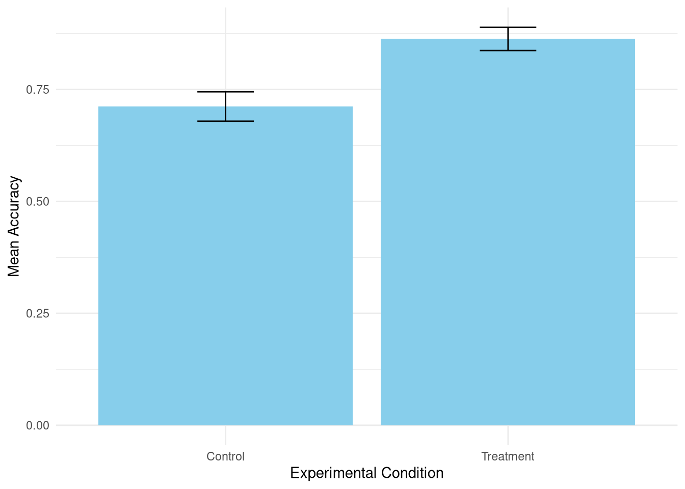

---# 1. METADATA: THE OFFICIAL RECORD # (Purpose: This section contains essential information for identifying, tracking, and citing the research activity. It mimics the cover page or mandatory headers of a bound notebook.)title:"PSYC [Course Number] Lab Notebook Entry: [Insert Activity Title]"author:"Student Name(s) and ID(s)"date: today # Automatically uses the current date. This serves as the official timestamp for the entry.# output: # html: # toc: true # Creates a Table of Contents for easy navigation# embed-resources: true # Makes the final HTML file self-contained# pdf: default # Uncomment if you prefer a PDF output---
8.1 1. Research Aim & Hypotheses
8.1.1 Research Question
What is the effect of [Independent Variable (IV)] on [Dependent Variable (DV)] in our sample of [Population]?
8.1.2 Hypotheses
H1 (Alternative): We predict that [Specific prediction based on IV and DV].
H0 (Null): There will be no significant effect of the IV on the DV.
Stimuli Details: [e.g., 20 high-arousal images from the IAPS database]
Software/Equipment: [e.g., PsychoPy, Qualtrics, R Studio]
8.2.3 Step-by-Step Procedure
[Detailed action 1, e.g., Calibrated the response box.]
[Detailed action 2, e.g., Participant received standardized instructions.]
[Detailed action 3, e.g., Ran 4 blocks of 20 trials each, with a 30-second break between blocks.]
8.2.4 Critical Observations & Deviations (The “Activity Log”)
Observation 1 (Time: 10:45 AM): The internet connection briefly dropped for 3 minutes during the survey administration for Participant 7. The system appears to have saved their progress, but a note was made to check the final file for completeness.
Deviation: We were supposed to collect 20 participants, but due to time, only collected 18. Analysis must account for lower statistical power.
8.3 3. Data Processing & Analysis
8.3.1 3.01 Generating Fake Data
This is not part of a lab notebook. This is some code to generate random data so that the rest of the code can be tested.
# Lab Notebook Data Generation Script# Purpose: Generates a sample CSV file with clean, pre-aggregated data# for use in the psychology lab notebook lesson (Quarto/R).# Load necessary librarylibrary(tidyverse)
── Attaching core tidyverse packages ──────────────────────── tidyverse 2.0.0 ──
✔ dplyr 1.1.4 ✔ readr 2.1.6
✔ forcats 1.0.1 ✔ stringr 1.6.0
✔ ggplot2 4.0.1 ✔ tibble 3.3.1
✔ lubridate 1.9.4 ✔ tidyr 1.3.2
✔ purrr 1.2.1
── Conflicts ────────────────────────────────────────── tidyverse_conflicts() ──
✖ dplyr::filter() masks stats::filter()
✖ dplyr::lag() masks stats::lag()
ℹ Use the conflicted package (<http://conflicted.r-lib.org/>) to force all conflicts to become errors
# --- Define Parameters ---N_PARTICIPANTS <-25CONDITIONS <-c("Treatment", "Control")# Parameters for Accuracy (The Dependent Variable)MEAN_TREATMENT_ACC <-0.85MEAN_CONTROL_ACC <-0.75SD_ACCURACY <-0.10# Parameters for Reaction Time (The Filtering Variable)MEAN_RT <-650# in millisecondsSD_RT <-150# in milliseconds# --- Generate the Data ---set.seed(42) # Set a seed for reproducible random datasample_raw_data <-tibble(participant_id =1:N_PARTICIPANTS,condition =factor(rep(CONDITIONS, length.out = N_PARTICIPANTS)),# Filtering Column: 90% pass (1), 10% fail (0).attention_check =rbinom(N_PARTICIPANTS, 1, 0.9), # 1. ACCURACY Column (Dependent Variable, continuous score 0.0 to 1.0)# This column simulates the final aggregated accuracy score.accuracy =if_else( condition =="Treatment",rnorm(N_PARTICIPANTS, mean = MEAN_TREATMENT_ACC, sd = SD_ACCURACY),rnorm(N_PARTICIPANTS, mean = MEAN_CONTROL_ACC, sd = SD_ACCURACY) ) |>pmin(1.0) |>pmax(0.0), # Cap values between 0 and 1# 2. RT Column (Filtering Variable, in milliseconds)# This column simulates the mean reaction time for filtering.rt =round(rnorm(N_PARTICIPANTS, mean = MEAN_RT, sd = SD_RT)))# Introduce simulated outliers to test the filtering step in the notebook# Participant 5 is too slow (tests RT filter)sample_raw_data$rt[5] <-3200# Participant 10 fails attention check and is too slow (tests both filters)sample_raw_data$rt[10] <-4500sample_raw_data$attention_check[10] <-0# --- Save the Data ---# Create the 'data' directory if it doesn't exist (matching the template's path)if (!dir.exists("data")) {dir.create("data")}# Save the dataset as a CSV filewrite_csv(sample_raw_data, "data/psych_exp_raw_data_2025-11-01.csv")# Final check of the data structureprint("Final sample data file created successfully in the 'data' folder.")
[1] "Final sample data file created successfully in the 'data' folder."
# Load necessary packages (e.g., for data manipulation, statistics)raw_data <-read_csv("data/psych_exp_raw_data_2025-11-01.csv")
Rows: 25 Columns: 5
── Column specification ────────────────────────────────────────────────────────
Delimiter: ","
chr (1): condition
dbl (4): participant_id, attention_check, accuracy, rt
ℹ Use `spec()` to retrieve the full column specification for this data.
ℹ Specify the column types or set `show_col_types = FALSE` to quiet this message.
# Display the dimensions to check if import was successfuldim(raw_data)
[1] 25 5
# Filter out participants who failed an attention check (Reaction Time > 3000ms)cleaned_data <- raw_data |>filter(rt <3000) |># Calculate the primary dependent variable (mean accuracy across all trials)mutate(mean_accuracy =mean(accuracy))# Value: Always check the final sample size after filtering.n_final <-nrow(cleaned_data)cat("Final sample size used for analysis after exclusions: ", n_final, "\n")
Final sample size used for analysis after exclusions: 23
8.3.3 Example: Run a two-sample t-test to compare mean accuracy between two conditions (Treatment vs. Control)
t_test_result <-t.test(accuracy ~ condition, data = cleaned_data)# Print the full results for comprehensive record-keepingt_test_result
Welch Two Sample t-test
data: accuracy by condition
t = -3.6113, df = 19.462, p-value = 0.001803
alternative hypothesis: true difference in means between group Control and group Treatment is not equal to 0
95 percent confidence interval:
-0.23821132 -0.06358062
sample estimates:
mean in group Control mean in group Treatment
0.7119613 0.8628572
8.3.4 Example: Generate a plot of the primary finding
cleaned_data |>group_by(condition) |>summarize(mean_acc =mean(accuracy), se =sd(accuracy)/sqrt(n())) |>ggplot(aes(x = condition, y = mean_acc)) +geom_bar(stat ="identity", fill ="skyblue") +geom_errorbar(aes(ymin = mean_acc - se, ymax = mean_acc + se), width =0.2) +labs(y ="Mean Accuracy", x ="Experimental Condition") +theme_minimal()

Mean Accuracy Scores by Condition (Treatment vs. Control)
8.4 4. Project Chronology and Daily Log
(Purpose: This section serves as the scientific diary for the project. Every day you work on the research—whether collecting data, cleaning code, or reading literature—you must log your activities, thoughts, and any problems encountered. This maintains the chain of custody and the historical record of the research.)
Activity: Reviewed literature on the IV. Found a key paper suggesting the effect is stronger in female participants.
Thought/Reflection:I should add a gender variable to the final model to check for this interaction effect (a moderation analysis).
Code Activity: Renamed the cleaned_data object in the analysis script to data_for_t_test for better clarity.
Action Required: Plan the code structure for running an ANOVA with gender as an additional factor next week.
8.4.3 4.3 Log Entry: 2025-11-10 (Initial Analysis Run & Troubleshooting)
Time: 1:30 PM - 2:30 PM.
Activity: Ran the main-analysis chunk in the Quarto notebook (Section 3.3) on the full dataset (P1 - P26).
Problem: The t.test() code returned an error: "Error: variable lengths differ."
Resolution: Identified that the error was caused by a participant’s row being deleted in the cleaning step without the corresponding row being deleted in the original R object. The issue was resolved by reloading raw_data inside the setup-and-import chunk, ensuring the entire workflow is self-contained and reproducible.
Conclusion: The p-value for the main effect is \(p = 0.08\). The effect is trending, but not significant. More data is required.